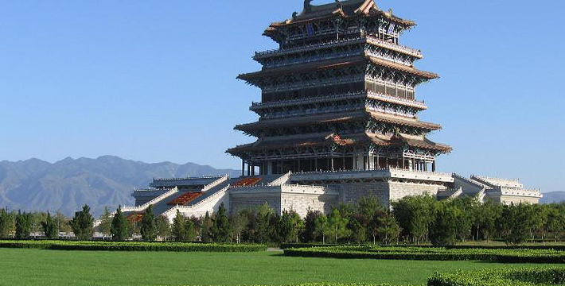
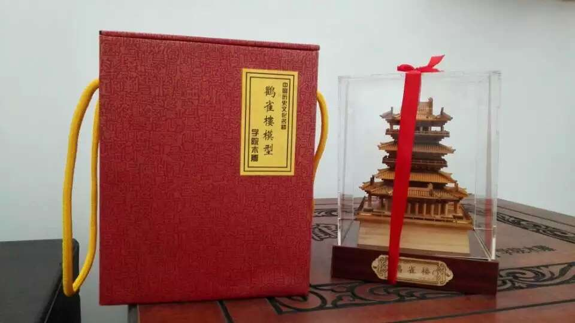
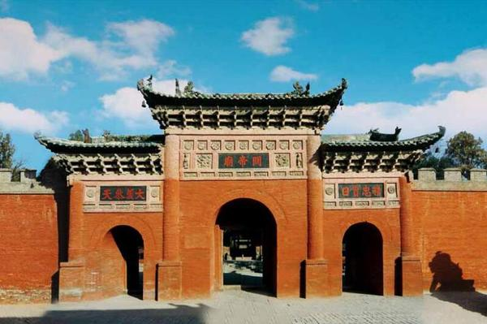
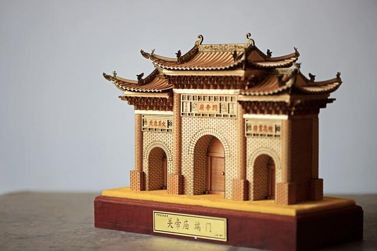
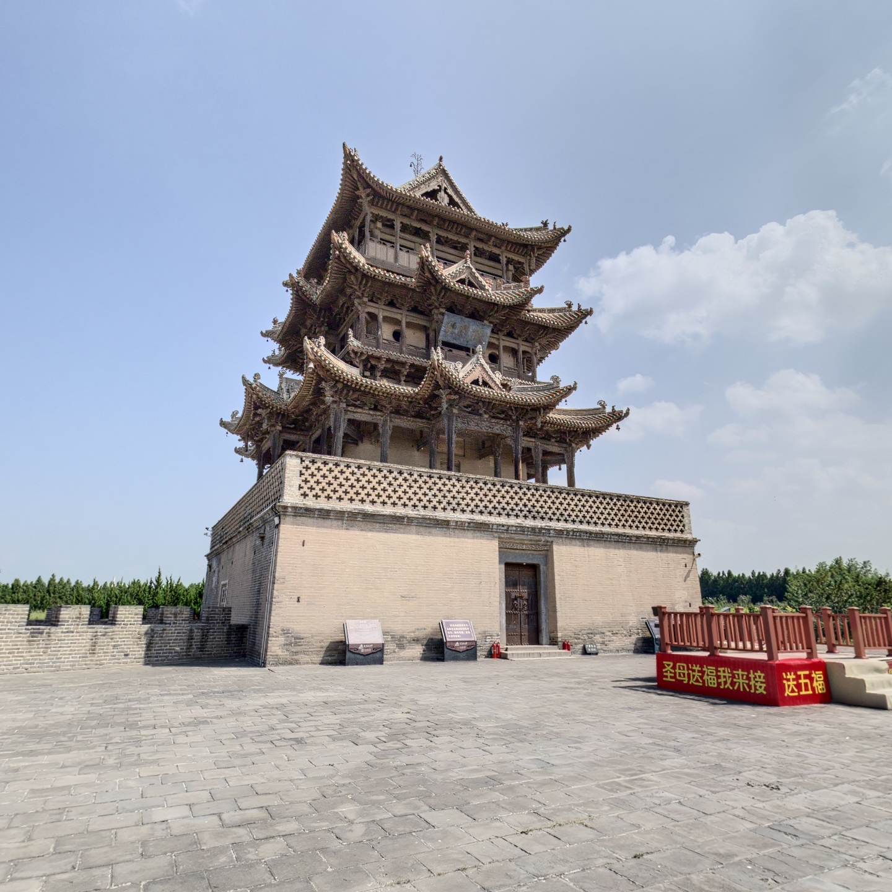
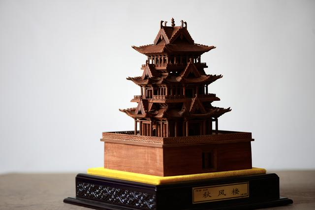
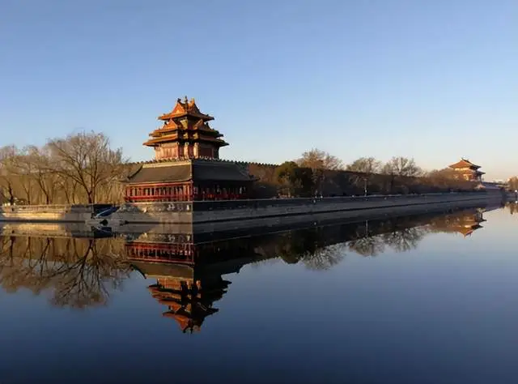
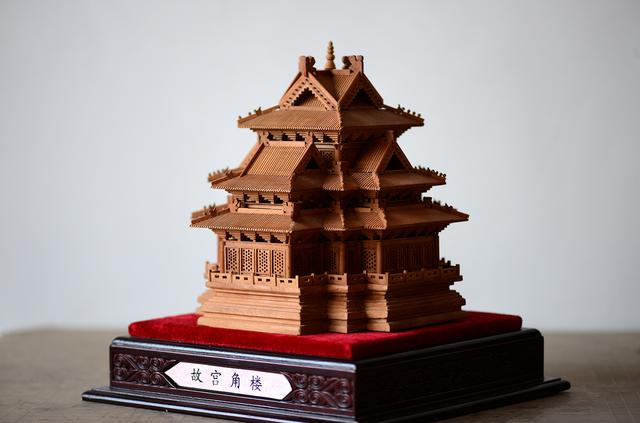

Miniature Chinese Architecture
Alongside building workshop tools, I also make wooden miniature models inspired by traditional Chinese architecture. These pieces are not functional objects. They are small interpretations of historic buildings, shaped through wood, proportion, and memory.
Guanque Tower (鹳雀楼), Yuncheng, Shanxi
Guanque Tower, or Stork Tower, is one of the most recognizable historic towers in China. Located in Yuncheng, Shanxi Province, it is closely connected with classical poetry and the image of looking outward from a high place.
The miniature model focuses on the tower's strong vertical rhythm: stacked floors, repeated rooflines, and the clear silhouette that makes the building immediately recognizable even at a small scale.


Guandi Temple (关帝庙), Yuncheng, Shanxi
The Guandi Temple in Yuncheng carries a powerful cultural identity. Its gate architecture is formal, balanced, and ceremonial, marking the transition from the outside world into a place of worship and remembrance.
For the model, I treated the gate as the architectural subject. The work keeps the broad roof, layered eaves, and symmetrical composition, while simplifying small details so the overall character remains clear.


Qiufeng Tower (秋风楼), Yuncheng, Shanxi
Qiufeng Tower is another Yuncheng landmark with an elegant layered structure. Compared with the heavier presence of a temple gate, its form feels more lifted, with rooflines that step upward and give the building a graceful profile.
The miniature version follows that balance. It keeps the main massing, the repeating eaves, and the calm proportion of the original, turning the tower into a compact sculptural object.


Forbidden City Corner Tower (故宫角楼), Beijing
The corner towers of the Forbidden City in Beijing are among the most iconic architectural forms in China. Their complex overlapping roofs, refined symmetry, and dramatic silhouette make them instantly recognizable.
This model is about condensing that complexity into a smaller object. The goal is not to reproduce every detail, but to preserve the feeling of layered roofs, rising corners, and the precise visual balance of the original.


A Different Kind of Workshop Work
These models sit somewhere between architecture, sculpture, and cultural representation. They are quieter than machines and tools, but they come from the same workshop habit: looking closely, understanding structure, and making something by hand.
More models will be documented over time. For me, this series is another way to stay connected with traditional forms and the long memory carried by historic buildings.